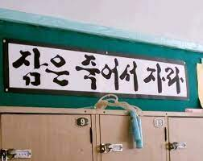
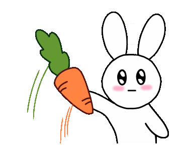

-
A ) 순환관광버스는 상품별로 사전에 지정된 코스로만 운영됩니다.
-
A ) 순환관광버스 투어패키지에는 해설 서비스가 포함되어 있습니다.
따라서 해설자에 대한 비용을 별도로 지불하지 않아도 됩니다.
-
A ) 모든 코스에 전담해설사가 배치되어 해설 서비스를 제공하고 있습니다.
-
A). 전라북도 순환관광버스는 별도의 자리를 지정하지 않는 자유석으로 운영되고 있으나, 사회적 거리두기 방침에 따라 지정좌석제로 운영될 수 있습니다.
-
A). 현재 순환관광버스는 45인승 대형버스로 운행 중입니다.
-
A1). 도내권은 전주종합경기장(벽계가든 맞은편), 군산월명경기장 앞, 익산역 앞
A2). 수도권은 용산역, 서울시청역
A3). 경상권은 서면역
A4). 코레일은 용산역, 서울역 탑승입니다.
* 여행사 일정에 따라 탑승지 변동이 있을 수 있음.
-
A). 전라북도 순환관광버스는 국내 외 관광객들을 대상으로 전담해설사와 함께 도내 14개 시군 주요 관광지를 편리하게 여행할 수 있도록 구성한 여행 상품입니다.
-
A). 잠은 죽어서 자라.
늘 감사하고 하늘같은 조장님께서 창시하신 명언입니다.
-
A). 네 사실입니다.
아래 사진은 늦게까지 감금당하였던것을 증명하는 사진입니다 ㅠㅠ.


(살려줘잉..)
